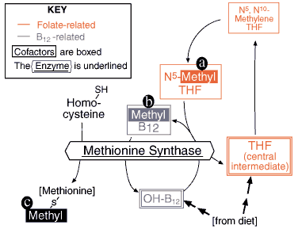

B12/Folate Problem set
Question 2: A reaction that uses both folate and B12
Tutorial to help answer the questionN5-methyl tetrahydrofolate (THF) and methyl-B12 are both cofactors in the reaction that produces:
A. methionine B. cysteine C. thymidylate D. inosine monophosphate E. methylmalonyl CoA
Tutorial
Methionine synthase needs two cofactors

Fig. 2 - Methionine synthase utilizes both a THF and a B12 derivative.
| This is all about a simple methyl group. Where the methyl originally comes from is not our concern here; we pick it up as N5-methyl THF (a), which first passes the methyl group to B12 (b), which in turn gives it up to make methionine (c). All three forms (a-c) are stages in a single enzymatic reaction, catalyzed by "methionine synthase" [whose other name, for the record, is "N5-methyl THF homocysteine methyltransferase"]. By the way, the coloring scheme in this and all other figures in this module is intended to provide an easy identification for all reactions involving either folate (red) or B12 (blue). This reaction is unique in involving both cofactors. Next, we will follow this methyl group a couple of steps further... |


Department of Biochemistry and Molecular Biophysics
The University of Arizona
January 31, 2000
Contact the Development Team
http://biology.arizona.edu
All contents copyright © 2000. All rights reserved.